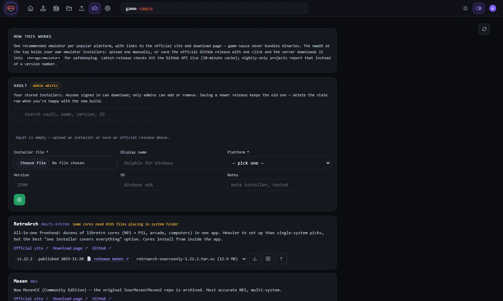

你的游戏，你来掌控（手柄）
game‑sauce 绝不会修改或移动它们；你的数字库和实体库也只有你自己能看。
免费 · 开源 · 自托管
game-sauce 会为你拥有的游戏建立目录、获取封面，让许多游戏直接在浏览器中运行，其余的则用你电脑上的模拟器启动，还能通过用手柄操作的大屏幕模式把整个游戏库搬到电视上。
Windows · macOS（Apple 芯片）· Linux · Docker、Unraid 和 Proxmox · 树莓派
截图使用内置的演示数据和生成的封面。
全家的游戏库集中在一处，运行在你自己掌控的机器上。
game‑sauce 绝不会修改或移动它们；你的数字库和实体库也只有你自己能看。
喜欢哪个都行，我们从不评判。
封面、标志、视频、手册。自动获取，或来自你自己的来源。
支持的游戏随时随地玩：即时存档保存在服务器上，放下、读取、继续。
game‑sauce 听候差遣：选择“游玩”，轻松开玩，零烦恼。
你的游戏库搬上电视。专为手柄设计，无需键盘。
Big Screen 模式里的 XBOX 360 Blades 界面。
游戏永远是主角。
由你决定。
尽情浏览。
我们送你书架。
玩着你最爱的 Steam 游戏时。
回头看看你为游戏花了多少钱，敢看的话。
游戏与游戏库报表尽在眼前。
好好欣赏，然后感叹：我之前怎么没发现？
没有借口：就在 game‑sauce 里。
好东西打上星标，其余的放进合集。
账户、角色，还有给孩子用的纯游玩账户。
尽管炫耀你的最高分，消息不会出门。
No-Intro 和 Redump 都说它是正版。
找出重复项，建议保留最好的一份。
sf2 变成 Street Fighter II。
还在整理游戏清单？让 game‑sauce 成为你唯一的真相来源。
你的游戏，你的方式
game‑sauce 也上夜班：游戏指纹在你睡觉时生成。
轻松备份与恢复，还能定时执行，让你安心。
人人都该做一次。
English、Français、日本語 等多种语言。Merci，谢谢。
整个应用都能用手柄，鼠标可有可无。
不跟踪，没陷阱，不骗你。
Windows, Mac, Linux, Docker, Pi, Proxmox, Unraid.
经典还是现代，光明还是黑暗？
更新通知会直接发给 game‑sauce 管理员的聊天。
ScreenScraper、SteamGridDB、IGDB、TheGamesDB、游戏素材等，任你选择。
想怎么改名都行，我们不会说出去。
来自内置演示游戏库的两段短片。
专为手柄和沙发设计的全屏视图。在游戏库中一键打开，再让浏览器或桌面应用在电视上全屏显示。


全屏的封面架，排成柔和的弧形。选择一个系列和平台，用方向键、鼠标滚轮、滑动或手柄滚动，然后按下开始游戏。
把你真实游戏架上的盒装游戏记录下来，可以手动添加或从列表导入，与你的数字收藏放在一起。每个人都有自己的游戏架。
服务器上的用户之间可以互发私信，管理员也可以发布通知。一切都不会离开你自己的机器。

经典和现代两种外观，浅色和深色两种主题。同一个游戏库，由你选择。



不附带。game-sauce 是用来管理你自己拥有的游戏的。它不包含也不提供游戏或 BIOS 文件，也不会替你下载游戏：你需要自带收藏。游玩方面，浏览器游玩由开源模拟器 EmulatorJS 提供，点击“开始游戏”时浏览器会加载它。在电脑上游玩时，“模拟器”页面会推荐模拟器并提供获取链接，启动器则会启动你自己安装的模拟器。
是的。它以 MIT 许可开源。无需创建账号，没有订阅，也没有任何追踪。有些元数据数据源要求你注册自己的免费账户才能使用其服务。
许多不需要 BIOS 的老主机可以直接在网页中运行。较新的系统，以及任何超出浏览器能力的游戏，则会通过启动器在你电脑上的模拟器中运行。
在你指定的文件夹里不会。它直接读取原位置的文件，绝不会移动、重命名或删除其中的文件。清理工具只会处理图片以及 game-sauce 自己存储的文件。
可以。为你信任的人创建账户即可。合集仅对创建者本人可见，仅游玩账户只能看到可在浏览器中游玩的游戏。
请在 GitHub 上提交 issue 或发起讨论，或发邮件到 hello@gamesauce.app。设置中的“系统健康状况”页面可以生成一份可复制粘贴的报告，其中不含任何机密信息。
game-sauce 是免费开源的。如果它对你有用，可以请我喝杯咖啡。这能让我有更多时间开发新功能、在 Windows、Mac 和 Linux 上测试，并回答大家的问题。